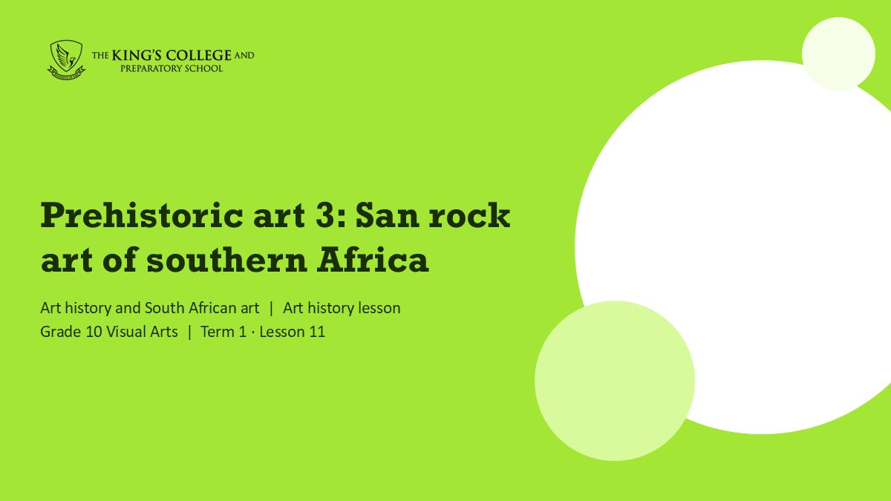

Term 1 · Lesson 11 · Art history lesson
Prehistoric Art 3: San Rock Art of Southern Africa
Start Here
Today I Will
- Describe San rock paintings and how they were made
- Explain the link between the eland, the trance dance and San belief
- Compare a San rock painting with a European cave painting
Think first
Look at our coat of arms. Where do you think the two figures in the centre come from?
Words to Know
| Word | Meaning |
|---|---|
| Rock art | Paintings and engravings made on rock surfaces in shelters and on boulders. |
| Engraving | An image cut, scratched or pecked into rock (also called a petroglyph). |
| Eland | The largest antelope, the most powerful spiritual symbol in San belief. |
| Trance | An altered state that San healers entered during the healing dance. |
| Heritage | Things from the past that a nation values and must protect for future generations. |
Slides

Videos
Notes
San rock paintings and engravings in South Africa; the eland, trance and the spiritual world; why this heritage must be protected.
San Rock Art
- A long tradition: Painted stones at Apollo 11 Cave, Namibia, are about 27 000 years old; San painting continued into the 1800s.
- Where: Thousands of sites, rich in the uKhahlamba-Drakensberg, the Cederberg and the Maloti mountains.
- Materials: Ochre, white clay and charcoal, bound with blood, fat or plant sap.
- Game Pass Shelter: A dying eland with crossed legs beside a figure holding its tail, often called the 'Rosetta Stone' of San art.
- The Linton Panel: Finely shaded figures in flowing lines, now at Iziko South African Museum, Cape Town.
The Spiritual World and Protecting It
- The trance dance: Healers danced to enter a trance and, in San belief, work in the spirit world.
- Signs in the paintings: Nosebleeds, bending figures, arms held back, and part-human, part-animal beings.
- The eland: Linked to spiritual power; a dying eland may mirror the healer's trance.
- Why protect it: The art is fragile and cannot be replaced; touching, wetting or graffiti damage it forever.
Remember
San rock art is our heritage: look closely, never touch.
Practical
You need: History booklet, visual journal
Analyse a San Rock Painting
- Write the facts: Unknown (San), eland panel, Game Pass Shelter, Kamberg, pigments on sandstone.
- Describe: what figures and animals do you see, and how are they arranged?
- Analyse: one FET formula sentence about line and one about tone or colour.
- Interpret: explain what the eland and the figure holding its tail may mean.
- Opinion: say why this work matters to South Africans today.
- Compare it with the Hall of the Bulls: two similarities and two differences.
Test Yourself
- Why is the eland important in San rock art?
- Name two signs of the trance dance that researchers see in San paintings.
- Give one difference between San rock art and the paintings at Lascaux.
Show answers
1. It was the most powerful spiritual symbol in San belief, linked to the healers' power. 2. Any two of: nosebleeds, bending figures, arms held back, part-human part-animal beings. 3. San art shows many human figures in movement and is in open rock shelters; Lascaux shows mainly animals deep inside a cave.
Finished Early?
Protect our heritage
Design a small sign for a San rock art site.
- Draw a thumbnail of a sign in your VJ, about the size of your hand.
- Include a simple eland shape in earth colours or tone.
- Add three short rules for visitors that explain how to protect the art.
- Under the sign, write one sentence on why this art cannot be replaced.